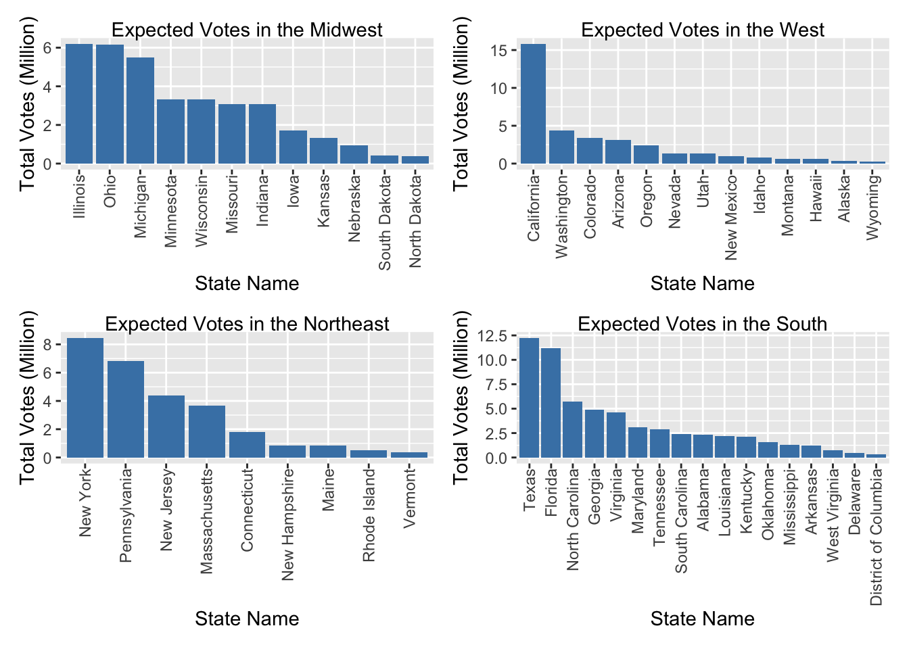
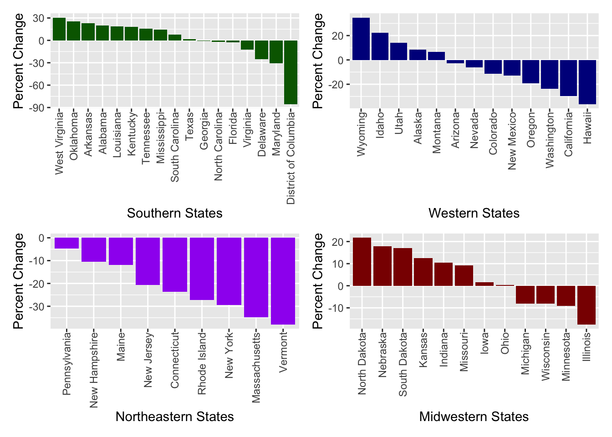

#Clean & Merge Polls and Region datasets
polls_df=
read_csv("./datasets/presidential_state_toplines_2020.csv") %>%
rename(date = modeldate) %>%
mutate(date = as.Date (date, format = "%m/%d/%Y"))%>%
separate(date, into = c("year", "month", "day")) %>%
select(state, month, day, candidate_chal,
winstate_chal, voteshare_chal,
candidate_inc, winstate_inc, voteshare_inc,
margin, state_turnout,
-candidate_chal, -candidate_inc) %>%
rename(
biden_winstate = winstate_chal,
biden_voteshare = voteshare_chal,
trump_winstate = winstate_inc,
trump_voteshare = voteshare_inc,
voteshare_margin = margin,
expvote_turnout = state_turnout) %>%
arrange(state, month, day)## Parsed with column specification:
## cols(
## .default = col_double(),
## branch = col_character(),
## model = col_character(),
## modeldate = col_character(),
## candidate_inc = col_character(),
## candidate_chal = col_character(),
## candidate_3rd = col_logical(),
## state = col_character(),
## winstate_3rd = col_logical(),
## voteshare_3rd = col_logical(),
## voteshare_3rd_hi = col_logical(),
## voteshare_3rd_lo = col_logical(),
## timestamp = col_character()
## )## See spec(...) for full column specifications.region_df =
read_csv("./datasets/states.csv") %>%
rename(state = State) ## Parsed with column specification:
## cols(
## State = col_character(),
## `State Code` = col_character(),
## Region = col_character(),
## Division = col_character()
## )polls_merge =
merge(
polls_df,
region_df,
by = "state") %>%
arrange(state, month, day) %>%
select(-`State Code`) %>%
relocate("state", "Region") %>%
view ()exp_votes=
polls_merge %>%
select (state, Region, month, day, expvote_turnout) %>%
drop_na() %>%
group_by(Region, state, month) %>%
summarize(
nov_turnout = mean(expvote_turnout),) %>%
filter(month == 11) %>%
view ()## `summarise()` regrouping output by 'Region', 'state' (override with `.groups` argument)expvote_plot1 =
exp_votes %>%
filter(Region == "Midwest") %>%
ggplot(aes(x = reorder(state, desc(nov_turnout)), y = nov_turnout/1000000)) +
geom_bar(stat = "identity", position = position_dodge(), fill='steelblue') +
labs(
title = "Expected Votes in the Midwest",
x = "State Name",
y = "Total Votes (Million)") +
theme(axis.text.x = element_text(angle=90, vjust=0.5, hjust=1),
plot.title = element_text(hjust = 0.5))
expvote_plot2 =
exp_votes %>%
filter(Region == "West") %>%
ggplot(aes(x = reorder(state, desc(nov_turnout)), y = nov_turnout/1000000)) +
geom_bar(stat = "identity", position = position_dodge(), fill='steelblue') +
labs(
title = "Expected Votes in the West",
x = "State Name",
y = "Total Votes (Million)") +
theme(axis.text.x = element_text(angle=90, vjust=0.5, hjust=1),
plot.title = element_text(hjust = 0.5))
expvote_plot3 =
exp_votes %>%
filter(Region == "Northeast") %>%
ggplot(aes(x = reorder(state, desc(nov_turnout)), y = nov_turnout/1000000)) +
geom_bar(stat = "identity", position = position_dodge(), fill='steelblue') +
labs(
title = "Expected Votes in the Northeast",
x = "State Name",
y = "Total Votes (Million)") +
theme(axis.text.x = element_text(angle=90, vjust=0.5, hjust=1),
plot.title = element_text(hjust = 0.5))
expvote_plot4 =
exp_votes %>%
filter(Region == "South") %>%
ggplot(aes(x = reorder(state, desc(nov_turnout)), y = nov_turnout/1000000)) +
geom_bar(stat = "identity", position = position_dodge(), fill='steelblue') +
labs(
title = "Expected Votes in the South",
x = "State Name",
y = "Total Votes (Million)") +
theme(axis.text.x = element_text(angle=90, vjust=0.5, hjust=1),
plot.title = element_text(hjust = 0.5))
##Combine Plots
expvote_plot1 + expvote_plot2 + expvote_plot3 + expvote_plot4
options(scipen = 999)vote_margin=
polls_merge %>%
select (state, Region, month, day, voteshare_margin) %>%
drop_na() %>%
group_by(Region, state, month) %>%
summarize(
month_avg = mean(voteshare_margin)) %>%
filter(month == 11) %>%
view ()## `summarise()` regrouping output by 'Region', 'state' (override with `.groups` argument)margin_plot1 =
vote_margin %>%
filter(Region == "South") %>%
ggplot(aes(x = reorder(state, desc(month_avg)), y = month_avg)) +
geom_bar(stat = "identity", position = position_dodge(), fill='dark green') +
labs(
title = "Trump's Margin",
x = "Southern States",
y = "Percent Difference") +
theme(axis.text.x = element_text(angle=90, vjust=0.5, hjust=1),
plot.title = element_text(hjust = 0.5))
margin_plot2 =
vote_margin %>%
filter(Region == "West") %>%
ggplot(aes(x = reorder(state, desc(month_avg)), y = month_avg)) +
geom_bar(stat = "identity", position = position_dodge(), fill='dark blue') +
labs(
title = "Trump's Vote Margin",
x = "Western States",
y = "Percent Difference") +
theme(axis.text.x = element_text(angle=90, vjust=0.5, hjust=1),
plot.title = element_text(hjust = 0.5))
margin_plot3 =
vote_margin %>%
filter(Region == "Northeast") %>%
ggplot(aes(x = reorder(state, desc(month_avg)), y = month_avg)) +
geom_bar(stat = "identity", position = position_dodge(), fill='purple') +
labs(
title = "Trump's Raw Vote Margin",
x = "Northeaster States",
y = "Percent Difference") +
theme(axis.text.x = element_text(angle=90, vjust=0.5, hjust=1),
plot.title = element_text(hjust = 0.5))
margin_plot4 =
vote_margin %>%
filter(Region == "Midwest") %>%
ggplot(aes(x = reorder(state, desc(month_avg)), y = month_avg)) +
geom_bar(stat = "identity", position = position_dodge(), fill='dark red') +
labs(
title = "Trump's Vote Margin",
x = "Midwestern States",
y = "Percent Difference") +
theme(axis.text.x = element_text(angle=90, vjust=0.5, hjust=1),
plot.title = element_text(hjust = 0.5))
##Combine Plots
margin_plot1 + margin_plot2 + margin_plot3 + margin_plot4
biden_df =
polls_merge %>%
select (state, Region, month, day, biden_winstate, biden_voteshare) %>%
group_by(Region, state, month) %>%
summarize(
avgwinstate = mean(biden_winstate),
avgvoteshare = mean(biden_voteshare),
) %>%
filter(month == 11) %>%
view ()## `summarise()` regrouping output by 'Region', 'state' (override with `.groups` argument)biden_state =
biden_df %>%
ggplot(aes(reorder(state, desc(avgwinstate)), y = avgwinstate)) +
geom_bar(stat = "identity", position = position_dodge()) +
labs(
title = "Biden's Chance to Win States",
x = "US States",
y = "Percent") +
theme(axis.text.x = element_text(angle=90, vjust=0.5, hjust=1),
plot.title = element_text(hjust = 0.5))
biden_state =
biden_df %>%
filter(Region == "Northeast") %>%
plot_ly(
x = ~state, y = ~avgwinstate, color = ~state,
type = "bar", colors = "viridis")
biden_vote =
biden_df %>%
ggplot(aes(reorder(state, desc(avgvoteshare)), y = avgvoteshare)) +
geom_bar(stat = "identity", position = position_dodge(), fill='dark blue') +
labs(
title = "Biden's Proportion of Votes by State",
x = "US States",
y = "Percent") +
theme(axis.text.x = element_text(angle=90, vjust=0.5, hjust=1),
plot.title = element_text(hjust = 0.5)) trump_df=
polls_merge %>%
select (state, Region, month, day, trump_winstate, trump_voteshare) %>%
group_by(Region, state, month) %>%
summarize(
avgwinstate = mean(trump_winstate),
avgvoteshare = mean(trump_voteshare),
) %>%
filter(month == 11) %>%
view ()## `summarise()` regrouping output by 'Region', 'state' (override with `.groups` argument)Trump_state =
trump_df %>%
ggplot(aes(reorder(state, desc(avgwinstate)), y = avgwinstate)) +
geom_bar(stat = "identity", position = position_dodge(), fill='dark red') +
labs(
title = "Trump's Chance to Win States",
x = "US States",
y = "Percent") +
theme(axis.text.x = element_text(angle=90, vjust=0.5, hjust=1),
plot.title = element_text(hjust = 0.5))
Trump_vote =
trump_df %>%
ggplot(aes(reorder(state, desc(avgvoteshare)), y = avgvoteshare)) +
geom_bar(stat = "identity", position = position_dodge(), fill='dark red') +
labs(
title = "Trump's Proportion of Votes by State",
x = "US States",
y = "Percent") +
theme(axis.text.x = element_text(angle=90, vjust=0.5, hjust=1),
plot.title = element_text(hjust = 0.5))